車の速度と制動距離に関するデータ．単位を変換しておく．
data(cars)
cars <- cars %>%
dplyr::mutate(
cars$speed <- cars$speed*1.60934,
cars$dist <- cars$dist*0.3048
)
summary(cars)## speed dist cars$speed <- cars$speed * 1.60934
## Min. : 4.0 Min. : 2 Min. : 6.4
## 1st Qu.:12.0 1st Qu.: 26 1st Qu.:19.3
## Median :15.0 Median : 36 Median :24.1
## Mean :15.4 Mean : 43 Mean :24.8
## 3rd Qu.:19.0 3rd Qu.: 56 3rd Qu.:30.6
## Max. :25.0 Max. :120 Max. :40.2
## cars$dist <- cars$dist * 0.3048
## Min. : 0.6
## 1st Qu.: 7.9
## Median :11.0
## Mean :13.1
## 3rd Qu.:17.1
## Max. :36.6ggplot(cars,aes(speed,dist)) +
geom_point() +
geom_smooth(method = "lm") +
scale_x_continuous(name='speed (km/h)')+
scale_y_continuous(name='braking distance (m)')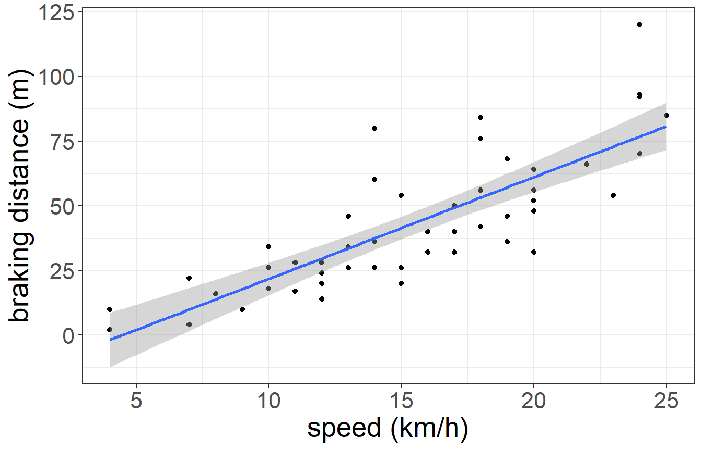
cor.test(~speed+dist,data=cars,method='spearman')## Warning in cor.test.default(x = c(4, 4, 7, 7, 8, 9, 10, 10, 10, 11, 11, :
## Cannot compute exact p-value with ties##
## Spearman's rank correlation rho
##
## data: speed and dist
## S = 3533, p-value = 9e-14
## alternative hypothesis: true rho is not equal to 0
## sample estimates:
## rho
## 0.83lm_car <- lm(dist~speed,data=cars)
summary(lm_car)##
## Call:
## lm(formula = dist ~ speed, data = cars)
##
## Residuals:
## Min 1Q Median 3Q Max
## -29.07 -9.53 -2.27 9.21 43.20
##
## Coefficients:
## Estimate Std. Error t value Pr(>|t|)
## (Intercept) -17.579 6.758 -2.60 0.012 *
## speed 3.932 0.416 9.46 1.5e-12 ***
## ---
## Signif. codes: 0 '***' 0.001 '**' 0.01 '*' 0.05 '.' 0.1 ' ' 1
##
## Residual standard error: 15.4 on 48 degrees of freedom
## Multiple R-squared: 0.651, Adjusted R-squared: 0.644
## F-statistic: 89.6 on 1 and 48 DF, p-value: 1.49e-12data(iris)
summary(iris)## Sepal.Length Sepal.Width Petal.Length Petal.Width
## Min. :4.30 Min. :2.00 Min. :1.00 Min. :0.1
## 1st Qu.:5.10 1st Qu.:2.80 1st Qu.:1.60 1st Qu.:0.3
## Median :5.80 Median :3.00 Median :4.35 Median :1.3
## Mean :5.84 Mean :3.06 Mean :3.76 Mean :1.2
## 3rd Qu.:6.40 3rd Qu.:3.30 3rd Qu.:5.10 3rd Qu.:1.8
## Max. :7.90 Max. :4.40 Max. :6.90 Max. :2.5
## Species
## setosa :50
## versicolor:50
## virginica :50
##
##
## ggplot(iris,aes(Species,Sepal.Length))+
geom_violin(width=0.2)+
geom_jitter(width=0.2)+theme_bw()+
theme(axis.title=element_text(size=20),axis.text=element_text(size=20))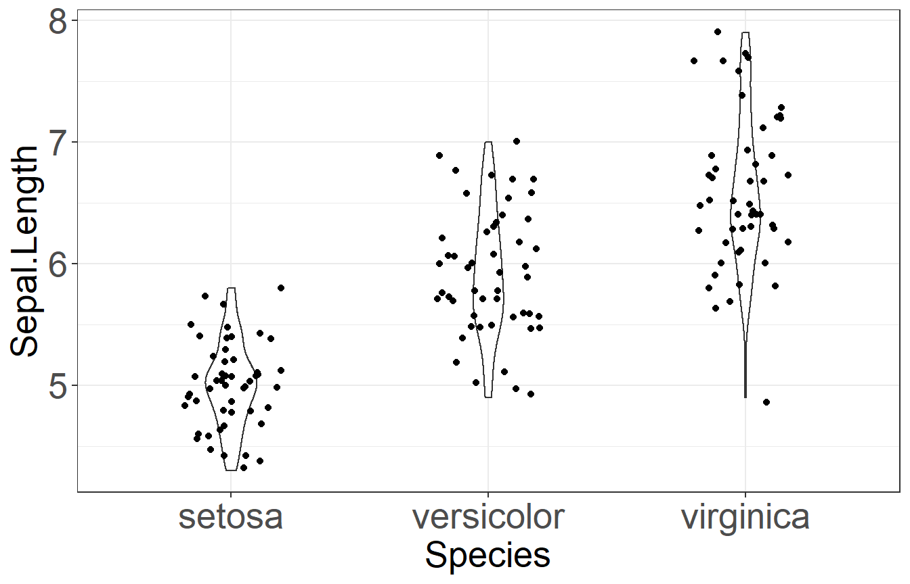
t.test(Sepal.Length~Species,data=iris,subset=Species!="setosa",var.equal = F)##
## Welch Two Sample t-test
##
## data: Sepal.Length by Species
## t = -6, df = 94, p-value = 2e-07
## alternative hypothesis: true difference in means is not equal to 0
## 95 percent confidence interval:
## -0.882 -0.422
## sample estimates:
## mean in group versicolor mean in group virginica
## 5.94 6.59wilcox.test(Sepal.Length~Species,data=iris,subset=Species!="setosa",var.equal = F)##
## Wilcoxon rank sum test with continuity correction
##
## data: Sepal.Length by Species
## W = 526, p-value = 6e-07
## alternative hypothesis: true location shift is not equal to 0Anova(lm(Sepal.Length~Species, data = iris))## Anova Table (Type II tests)
##
## Response: Sepal.Length
## Sum Sq Df F value Pr(>F)
## Species 63.2 2 119 <2e-16 ***
## Residuals 39.0 147
## ---
## Signif. codes: 0 '***' 0.001 '**' 0.01 '*' 0.05 '.' 0.1 ' ' 1kruskal.test(Sepal.Length~Species, data = iris)##
## Kruskal-Wallis rank sum test
##
## data: Sepal.Length by Species
## Kruskal-Wallis chi-squared = 97, df = 2, p-value <2e-16pairwise.t.test(iris$Sepal.Length,iris$Species,p.adjust.method = 'holm')##
## Pairwise comparisons using t tests with pooled SD
##
## data: iris$Sepal.Length and iris$Species
##
## setosa versicolor
## versicolor 2e-15 -
## virginica <2e-16 3e-09
##
## P value adjustment method: holmpairwise.wilcox.test(iris$Sepal.Length,iris$Species,p.adjust.method = 'holm')##
## Pairwise comparisons using Wilcoxon rank sum test
##
## data: iris$Sepal.Length and iris$Species
##
## setosa versicolor
## versicolor 2e-13 -
## virginica <2e-16 6e-07
##
## P value adjustment method: holmdata("ToothGrowth")
ToothGrowth <- ToothGrowth %>%
dplyr::mutate(dose = factor(dose))
summary(ToothGrowth)## len supp dose
## Min. : 4.2 OJ:30 0.5:20
## 1st Qu.:13.1 VC:30 1 :20
## Median :19.2 2 :20
## Mean :18.8
## 3rd Qu.:25.3
## Max. :33.9ggplot(ToothGrowth,aes(dose,len,colour=supp)) +
geom_jitter(width=0.2, height = 0)+
scale_x_discrete(name='Supplement dose (mg/day)')+
scale_y_continuous(name=expression(paste('Odeonblasts length (',mu,'m)'))) +
scale_colour_hue(name='Supplement')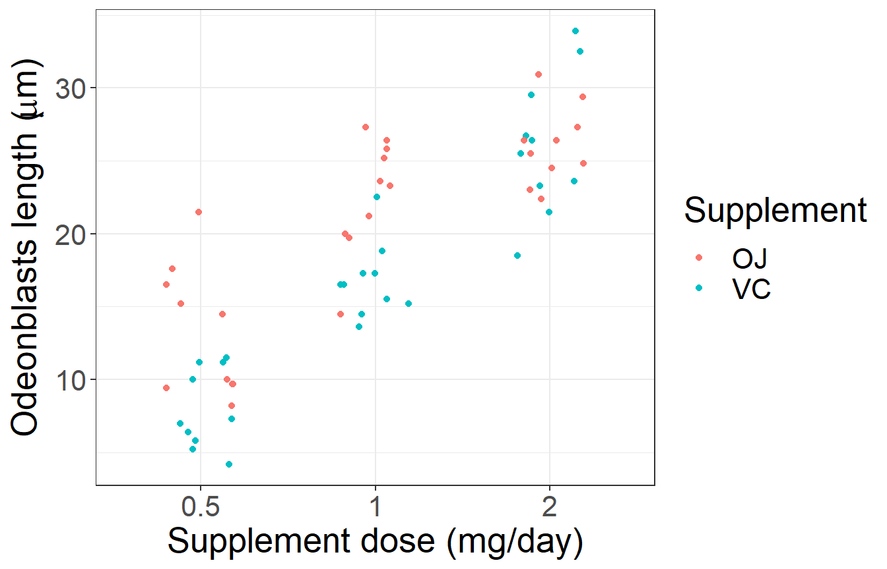
Anova(lm( len ~ supp * dose, data=ToothGrowth ) )## Anova Table (Type II tests)
##
## Response: len
## Sum Sq Df F value Pr(>F)
## supp 205 1 15.57 0.00023 ***
## dose 2426 2 92.00 < 2e-16 ***
## supp:dose 108 2 4.11 0.02186 *
## Residuals 712 54
## ---
## Signif. codes: 0 '***' 0.001 '**' 0.01 '*' 0.05 '.' 0.1 ' ' 1jonckheere.test(ToothGrowth$len,as.numeric(ToothGrowth$dose))## Warning in jonckheere.test(ToothGrowth$len, as.numeric(ToothGrowth$dose)): Sample size > 100 or data with ties
## p-value based on normal approximation. Specify nperm for permutation p-value##
## Jonckheere-Terpstra test
##
## data:
## JT = 1104, p-value = 8e-12
## alternative hypothesis: two.sideddata("Titanic")
Titanic <- as.data.frame(Titanic)
summary(Titanic)## Class Sex Age Survived Freq
## 1st :8 Male :16 Child:16 No :16 Min. : 0
## 2nd :8 Female:16 Adult:16 Yes:16 1st Qu.: 1
## 3rd :8 Median : 14
## Crew:8 Mean : 69
## 3rd Qu.: 77
## Max. :670xtabs(Freq~Sex + Survived, Titanic)## Survived
## Sex No Yes
## Male 1364 367
## Female 126 344mosaicでは，Freq列があると自動で読み込んでくれる
vcd::mosaic(Survived~Class+Sex,data=Titanic,direction=c('v','h','h'))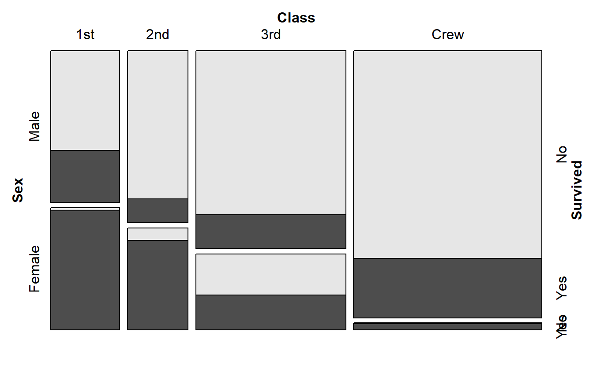
fisher.test(xtabs(Freq~Sex + Survived, Titanic))##
## Fisher's Exact Test for Count Data
##
## data: xtabs(Freq ~ Sex + Survived, Titanic)
## p-value <2e-16
## alternative hypothesis: true odds ratio is not equal to 1
## 95 percent confidence interval:
## 7.98 12.93
## sample estimates:
## odds ratio
## 10.1chisq.test(xtabs(Freq~Sex + Survived, Titanic))##
## Pearson's Chi-squared test with Yates' continuity correction
##
## data: xtabs(Freq ~ Sex + Survived, Titanic)
## X-squared = 454, df = 1, p-value <2e-16Fisherの正確検定は，計算量が多すぎてできない
chisq.test(xtabs(Freq~Class+ Survived, Titanic))##
## Pearson's Chi-squared test
##
## data: xtabs(Freq ~ Class + Survived, Titanic)
## X-squared = 190, df = 3, p-value <2e-16mat <- xtabs(Freq~Class+ Survived, Titanic)
prop.trend.test(mat[,1], apply(mat, 1, sum))##
## Chi-squared Test for Trend in Proportions
##
## data: mat[, 1] out of apply(mat, 1, sum) ,
## using scores: 1 2 3 4
## X-squared = 162, df = 1, p-value <2e-16data('SpaceShuttle')
SpaceShuttle <- SpaceShuttle %>%
dplyr::mutate(
Fail = if_else(Fail == "yes", T, F),
Pressure = factor(Pressure)
) %>%
na.omit()
summary(SpaceShuttle)## FlightNumber Temperature Pressure Fail nFailures
## 1 : 1 Min. :53.0 50 : 7 Mode :logical Min. :0.000
## 2 : 1 1st Qu.:67.0 100: 2 FALSE:16 1st Qu.:0.000
## 3 : 1 Median :70.0 200:14 TRUE :7 Median :0.000
## 41B : 1 Mean :69.6 Mean :0.391
## 41C : 1 3rd Qu.:75.0 3rd Qu.:1.000
## 41D : 1 Max. :81.0 Max. :2.000
## (Other):17
## Damage
## Min. : 0.00
## 1st Qu.: 0.00
## Median : 0.00
## Mean : 1.61
## 3rd Qu.: 4.00
## Max. :11.00
## ggplot(SpaceShuttle,aes(Temperature,as.numeric(Fail))) +
geom_jitter(width=0,height=0.02, aes(colour = Pressure)) +
geom_smooth(method = "glm", method.args = list(family = "binomial"))+
scale_y_continuous(name='Fail',breaks=c(0,1))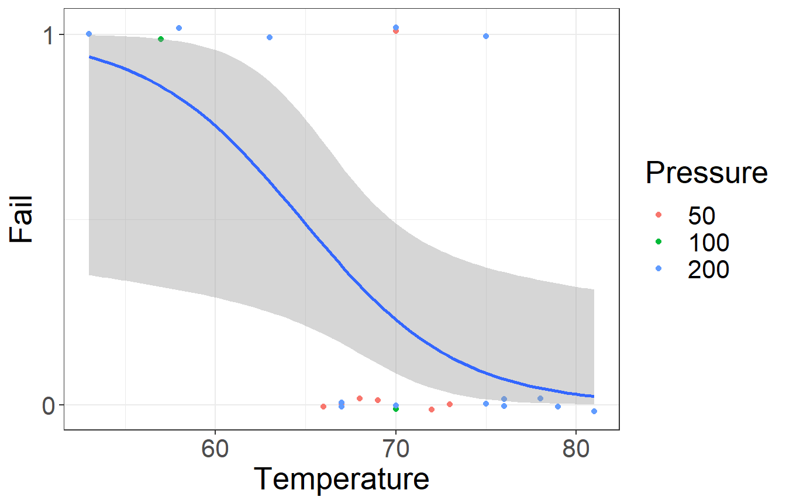
glm(Fail~Temperature,family=binomial,data=SpaceShuttle) %>% summary()##
## Call:
## glm(formula = Fail ~ Temperature, family = binomial, data = SpaceShuttle)
##
## Deviance Residuals:
## Min 1Q Median 3Q Max
## -1.061 -0.761 -0.378 0.452 2.217
##
## Coefficients:
## Estimate Std. Error z value Pr(>|z|)
## (Intercept) 15.043 7.379 2.04 0.041 *
## Temperature -0.232 0.108 -2.14 0.032 *
## ---
## Signif. codes: 0 '***' 0.001 '**' 0.01 '*' 0.05 '.' 0.1 ' ' 1
##
## (Dispersion parameter for binomial family taken to be 1)
##
## Null deviance: 28.267 on 22 degrees of freedom
## Residual deviance: 20.315 on 21 degrees of freedom
## AIC: 24.32
##
## Number of Fisher Scoring iterations: 5data('UCBAdmissions')
UCBAdmissions <- as.data.frame(UCBAdmissions)
summary(UCBAdmissions)## Admit Gender Dept Freq
## Admitted:12 Male :12 A:4 Min. : 8
## Rejected:12 Female:12 B:4 1st Qu.: 80
## C:4 Median :170
## D:4 Mean :189
## E:4 3rd Qu.:302
## F:4 Max. :512vcd::mosaic(Admit~Gender+Dept,data=UCBAdmissions,direction=c('v','v','h'))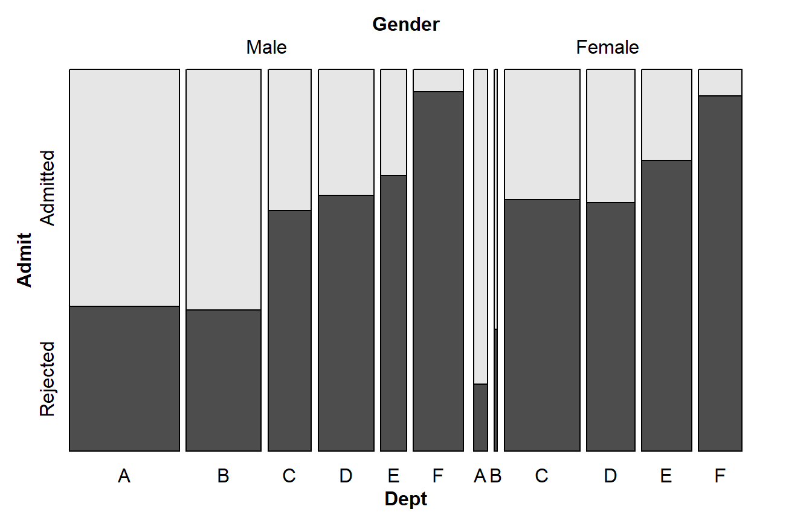
女性は合格しにくい？
fisher.test(xtabs(Freq~Gender+Admit, UCBAdmissions))##
## Fisher's Exact Test for Count Data
##
## data: xtabs(Freq ~ Gender + Admit, UCBAdmissions)
## p-value <2e-16
## alternative hypothesis: true odds ratio is not equal to 1
## 95 percent confidence interval:
## 1.62 2.09
## sample estimates:
## odds ratio
## 1.84性別による差はない
# UCBAdmissions_rev <- tidyr::spread(UCBAdmissions, key = "Admit", value = "Freq")
# glm(cbind(Admitted, Admitted + Rejected) ~ Gender + Dept,
# data = UCBAdmissions_rev, family = binomial) %>% summary()wine <- read.csv("wine.dat")
summary(wine)## Cvs Alcohol Malic.acid Ash
## Min. :1.00 Min. :11.0 Min. :0.74 Min. :1.36
## 1st Qu.:1.00 1st Qu.:12.4 1st Qu.:1.60 1st Qu.:2.21
## Median :2.00 Median :13.1 Median :1.86 Median :2.36
## Mean :1.94 Mean :13.0 Mean :2.34 Mean :2.37
## 3rd Qu.:3.00 3rd Qu.:13.7 3rd Qu.:3.08 3rd Qu.:2.56
## Max. :3.00 Max. :14.8 Max. :5.80 Max. :3.23
## Alcalinity.of.ash Magnesium Total.phenols Flavanoids
## Min. :10.6 Min. : 70.0 Min. :0.98 Min. :0.34
## 1st Qu.:17.2 1st Qu.: 88.0 1st Qu.:1.74 1st Qu.:1.21
## Median :19.5 Median : 98.0 Median :2.36 Median :2.13
## Mean :19.5 Mean : 99.7 Mean :2.30 Mean :2.03
## 3rd Qu.:21.5 3rd Qu.:107.0 3rd Qu.:2.80 3rd Qu.:2.88
## Max. :30.0 Max. :162.0 Max. :3.88 Max. :5.08
## Nonflavanoid.phenols Proanthocyanins Color.intensity Hue
## Min. :0.130 Min. :0.41 Min. : 1.28 Min. :0.480
## 1st Qu.:0.270 1st Qu.:1.25 1st Qu.: 3.22 1st Qu.:0.782
## Median :0.340 Median :1.55 Median : 4.69 Median :0.965
## Mean :0.362 Mean :1.59 Mean : 5.06 Mean :0.957
## 3rd Qu.:0.438 3rd Qu.:1.95 3rd Qu.: 6.20 3rd Qu.:1.120
## Max. :0.660 Max. :3.58 Max. :13.00 Max. :1.710
## OD280.OD315.of.diluted.wines Proline
## Min. :1.27 Min. : 278
## 1st Qu.:1.94 1st Qu.: 500
## Median :2.78 Median : 674
## Mean :2.61 Mean : 747
## 3rd Qu.:3.17 3rd Qu.: 985
## Max. :4.00 Max. :1680wineClasses <- factor(wine$Cvs)
pca_wine <- prcomp(wine[,-1],scale.=T)
summary(pca_wine)## Importance of components:
## PC1 PC2 PC3 PC4 PC5 PC6 PC7
## Standard deviation 2.169 1.580 1.203 0.9586 0.9237 0.8010 0.7423
## Proportion of Variance 0.362 0.192 0.111 0.0707 0.0656 0.0494 0.0424
## Cumulative Proportion 0.362 0.554 0.665 0.7360 0.8016 0.8510 0.8934
## PC8 PC9 PC10 PC11 PC12 PC13
## Standard deviation 0.5903 0.5375 0.5009 0.4752 0.411 0.32152
## Proportion of Variance 0.0268 0.0222 0.0193 0.0174 0.013 0.00795
## Cumulative Proportion 0.9202 0.9424 0.9617 0.9791 0.992 1.00000pca_wine$rotation[,1:5]## PC1 PC2 PC3 PC4 PC5
## Alcohol -0.14433 0.48365 -0.2074 0.0179 -0.2657
## Malic.acid 0.24519 0.22493 0.0890 -0.5369 0.0352
## Ash 0.00205 0.31607 0.6262 0.2142 -0.1430
## Alcalinity.of.ash 0.23932 -0.01059 0.6121 -0.0609 0.0661
## Magnesium -0.14199 0.29963 0.1308 0.3518 0.7270
## Total.phenols -0.39466 0.06504 0.1462 -0.1981 -0.1493
## Flavanoids -0.42293 -0.00336 0.1507 -0.1523 -0.1090
## Nonflavanoid.phenols 0.29853 0.02878 0.1704 0.2033 -0.5007
## Proanthocyanins -0.31343 0.03930 0.1495 -0.3991 0.1369
## Color.intensity 0.08862 0.53000 -0.1373 -0.0659 -0.0764
## Hue -0.29671 -0.27924 0.0852 0.4278 -0.1736
## OD280.OD315.of.diluted.wines -0.37617 -0.16450 0.1660 -0.1841 -0.1012
## Proline -0.28675 0.36490 -0.1267 0.2321 -0.1579plot(pca_wine$x[,1:2], col = wineClasses)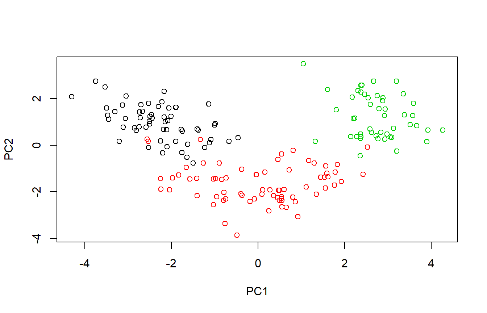
wine_clust <- hclust(dist(wine[,-1]))
plot(wine_clust)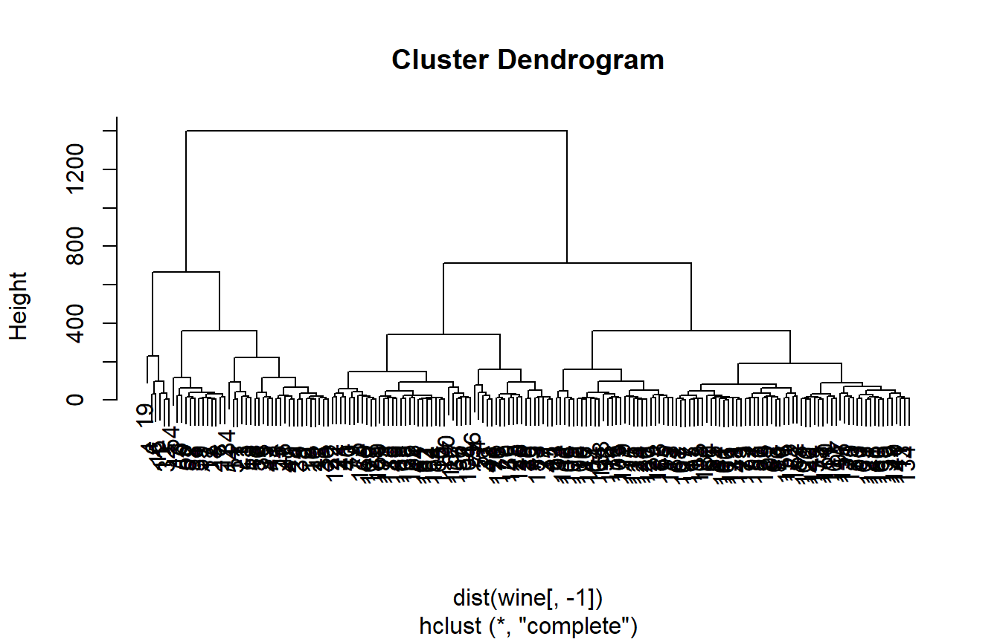
wine_clust_3 <- cutree(wine_clust,3)
wine_ctbl <- table(wineClasses,wine_clust_3)
wine_ctbl## wine_clust_3
## wineClasses 1 2 3
## 1 43 16 0
## 2 0 15 56
## 3 0 21 27gpはordered.factor型なので注意
data('esoph')
summary(esoph)## agegp alcgp tobgp ncases ncontrols
## 25-34:15 0-39g/day:23 0-9g/day:24 Min. : 0.00 Min. : 1.0
## 35-44:15 40-79 :23 10-19 :24 1st Qu.: 0.00 1st Qu.: 3.0
## 45-54:16 80-119 :21 20-29 :20 Median : 1.00 Median : 6.0
## 55-64:16 120+ :21 30+ :20 Mean : 2.27 Mean :11.1
## 65-74:15 3rd Qu.: 4.00 3rd Qu.:14.0
## 75+ :11 Max. :17.00 Max. :60.0# esoph_g <- tidyr::gather(esoph, select = c(ncases, ncontrols), value = "Freq")# vcd::mosaic(key~agegp,data=esoph_g,direction=c('v','h','h'))# vcd::mosaic(key~alcgp,data=esoph_g,direction=c('v','h','h'))glm(cbind(ncases, ncases + ncontrols)~.,family=binomial,data=esoph) %>%
summary()##
## Call:
## glm(formula = cbind(ncases, ncases + ncontrols) ~ ., family = binomial,
## data = esoph)
##
## Deviance Residuals:
## Min 1Q Median 3Q Max
## -1.699 -0.542 -0.216 0.174 1.941
##
## Coefficients:
## Estimate Std. Error z value Pr(>|z|)
## (Intercept) -2.07518 0.19562 -10.61 < 2e-16 ***
## agegp.L 2.64625 0.64635 4.09 4.2e-05 ***
## agegp.Q -1.25555 0.58631 -2.14 0.032 *
## agegp.C 0.19939 0.44439 0.45 0.654
## agegp^4 0.04653 0.30482 0.15 0.879
## agegp^5 -0.16195 0.18985 -0.85 0.394
## alcgp.L 1.15444 0.18787 6.14 8.0e-10 ***
## alcgp.Q -0.24924 0.16984 -1.47 0.142
## alcgp.C 0.21191 0.15172 1.40 0.162
## tobgp.L 0.43387 0.18034 2.41 0.016 *
## tobgp.Q 0.00175 0.17642 0.01 0.992
## tobgp.C 0.11454 0.17787 0.64 0.520
## ---
## Signif. codes: 0 '***' 0.001 '**' 0.01 '*' 0.05 '.' 0.1 ' ' 1
##
## (Dispersion parameter for binomial family taken to be 1)
##
## Null deviance: 169.577 on 87 degrees of freedom
## Residual deviance: 45.014 on 76 degrees of freedom
## AIC: 223.5
##
## Number of Fisher Scoring iterations: 6esoph_rev <- esoph %>%
dplyr::mutate_at(vars(ends_with("gp")), list(~factor(., ordered = F)))
glm(cbind(ncases, ncases + ncontrols)~.,family=binomial,data=esoph_rev) %>%
summary()##
## Call:
## glm(formula = cbind(ncases, ncases + ncontrols) ~ ., family = binomial,
## data = esoph_rev)
##
## Deviance Residuals:
## Min 1Q Median 3Q Max
## -1.699 -0.542 -0.216 0.174 1.941
##
## Coefficients:
## Estimate Std. Error z value Pr(>|z|)
## (Intercept) -5.659 1.024 -5.53 3.3e-08 ***
## agegp35-44 1.536 1.064 1.44 0.1488
## agegp45-54 2.732 1.021 2.68 0.0074 **
## agegp55-64 3.042 1.016 2.99 0.0028 **
## agegp65-74 3.328 1.020 3.26 0.0011 **
## agegp75+ 3.291 1.056 3.12 0.0018 **
## alcgp40-79 0.955 0.234 4.07 4.6e-05 ***
## alcgp80-119 1.187 0.256 4.64 3.4e-06 ***
## alcgp120+ 1.644 0.270 6.08 1.2e-09 ***
## tobgp10-19 0.295 0.197 1.49 0.1351
## tobgp20-29 0.335 0.235 1.42 0.1545
## tobgp30+ 0.633 0.256 2.47 0.0135 *
## ---
## Signif. codes: 0 '***' 0.001 '**' 0.01 '*' 0.05 '.' 0.1 ' ' 1
##
## (Dispersion parameter for binomial family taken to be 1)
##
## Null deviance: 169.577 on 87 degrees of freedom
## Residual deviance: 45.014 on 76 degrees of freedom
## AIC: 223.5
##
## Number of Fisher Scoring iterations: 6##データ概観
data('airquality')
airquality <- airquality %>%
dplyr::mutate(
Month = factor(Month),
Day = row_number()
)
summary(airquality)## Ozone Solar.R Wind Temp Month
## Min. : 1.0 Min. : 7 Min. : 1.70 Min. :56.0 5:31
## 1st Qu.: 18.0 1st Qu.:116 1st Qu.: 7.40 1st Qu.:72.0 6:30
## Median : 31.5 Median :205 Median : 9.70 Median :79.0 7:31
## Mean : 42.1 Mean :186 Mean : 9.96 Mean :77.9 8:31
## 3rd Qu.: 63.2 3rd Qu.:259 3rd Qu.:11.50 3rd Qu.:85.0 9:30
## Max. :168.0 Max. :334 Max. :20.70 Max. :97.0
## NA's :37 NA's :7
## Day
## Min. : 1
## 1st Qu.: 39
## Median : 77
## Mean : 77
## 3rd Qu.:115
## Max. :153
## ggpairs(dplyr::select(airquality, -Day))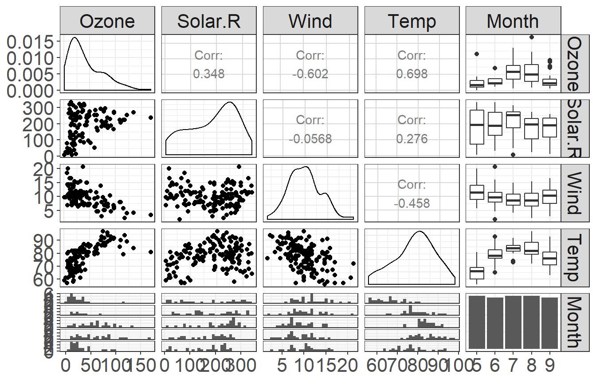
# ggplot(tidyr::gather(airquality, select = c(-Day, -Month))) +
# geom_line(aes(Day, value, colour = key)) +
# facet_wrap(~key, scale = "free_y")glm(Ozone~.-Day,family=gaussian,data=airquality) %>%
summary()##
## Call:
## glm(formula = Ozone ~ . - Day, family = gaussian, data = airquality)
##
## Deviance Residuals:
## Min 1Q Median 3Q Max
## -40.34 -13.49 -3.17 10.40 92.69
##
## Coefficients:
## Estimate Std. Error t value Pr(>|t|)
## (Intercept) -74.2348 26.1018 -2.84 0.0054 **
## Solar.R 0.0522 0.0237 2.21 0.0296 *
## Wind -3.1087 0.6601 -4.71 7.8e-06 ***
## Temp 1.8751 0.3407 5.50 2.7e-07 ***
## Month6 -14.7590 9.1227 -1.62 0.1088
## Month7 -8.7486 7.8291 -1.12 0.2664
## Month8 -4.1965 8.1469 -0.52 0.6076
## Month9 -15.9673 6.6556 -2.40 0.0182 *
## ---
## Signif. codes: 0 '***' 0.001 '**' 0.01 '*' 0.05 '.' 0.1 ' ' 1
##
## (Dispersion parameter for gaussian family taken to be 429)
##
## Null deviance: 121802 on 110 degrees of freedom
## Residual deviance: 44231 on 103 degrees of freedom
## (42 observations deleted due to missingness)
## AIC: 997.6
##
## Number of Fisher Scoring iterations: 2airquality_bin <- dplyr::mutate(airquality, Ozone = if_else(Ozone > 50, T, F))
glm(Ozone~.-Day,family=gaussian,data=airquality) %>%
summary()##
## Call:
## glm(formula = Ozone ~ . - Day, family = gaussian, data = airquality)
##
## Deviance Residuals:
## Min 1Q Median 3Q Max
## -40.34 -13.49 -3.17 10.40 92.69
##
## Coefficients:
## Estimate Std. Error t value Pr(>|t|)
## (Intercept) -74.2348 26.1018 -2.84 0.0054 **
## Solar.R 0.0522 0.0237 2.21 0.0296 *
## Wind -3.1087 0.6601 -4.71 7.8e-06 ***
## Temp 1.8751 0.3407 5.50 2.7e-07 ***
## Month6 -14.7590 9.1227 -1.62 0.1088
## Month7 -8.7486 7.8291 -1.12 0.2664
## Month8 -4.1965 8.1469 -0.52 0.6076
## Month9 -15.9673 6.6556 -2.40 0.0182 *
## ---
## Signif. codes: 0 '***' 0.001 '**' 0.01 '*' 0.05 '.' 0.1 ' ' 1
##
## (Dispersion parameter for gaussian family taken to be 429)
##
## Null deviance: 121802 on 110 degrees of freedom
## Residual deviance: 44231 on 103 degrees of freedom
## (42 observations deleted due to missingness)
## AIC: 997.6
##
## Number of Fisher Scoring iterations: 2pca_airquality <- airquality %>%
na.omit() %>%
.[c('Solar.R','Wind','Temp')] %>%
prcomp(scale. = T)
summary(pca_airquality)## Importance of components:
## PC1 PC2 PC3
## Standard deviation 1.280 0.943 0.687
## Proportion of Variance 0.546 0.297 0.157
## Cumulative Proportion 0.546 0.843 1.000airquality_rev <- airquality %>%
na.omit() %>%
dplyr::transmute(
Ozone=cut(Ozone,breaks=c(-Inf,50,Inf)),
Weather_1=as.vector(pca_airquality$x[,1]),
Weather_2=as.vector(pca_airquality$x[,2]),
Weather_3=as.vector(pca_airquality$x[,3]),
Month
)ggpairs(airquality_rev)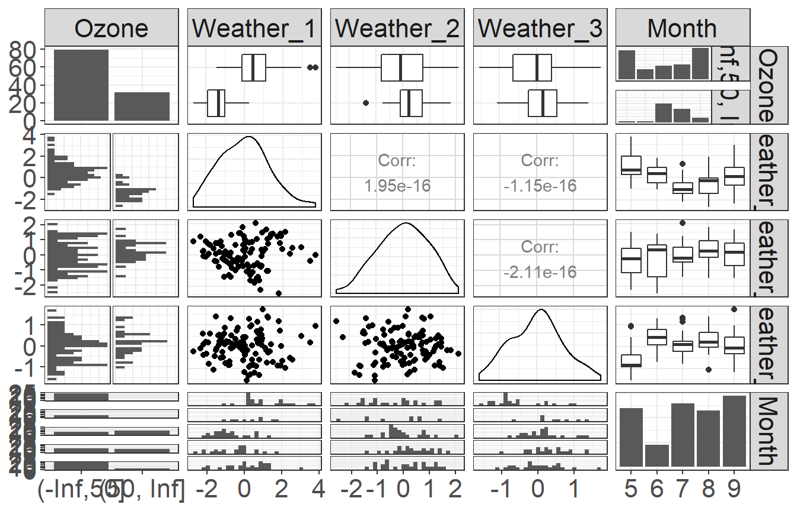
glm(Ozone~.,family=binomial,data=airquality_rev) %>%
summary()##
## Call:
## glm(formula = Ozone ~ ., family = binomial, data = airquality_rev)
##
## Deviance Residuals:
## Min 1Q Median 3Q Max
## -2.1609 -0.1226 -0.0058 0.0389 2.1464
##
## Coefficients:
## Estimate Std. Error z value Pr(>|z|)
## (Intercept) -1.702 1.614 -1.05 0.29163
## Weather_1 -4.820 1.289 -3.74 0.00018 ***
## Weather_2 1.704 0.713 2.39 0.01680 *
## Weather_3 3.136 1.233 2.54 0.01098 *
## Month6 -3.573 2.433 -1.47 0.14194
## Month7 -2.053 1.935 -1.06 0.28884
## Month8 -2.007 2.028 -0.99 0.32236
## Month9 -6.353 3.187 -1.99 0.04624 *
## ---
## Signif. codes: 0 '***' 0.001 '**' 0.01 '*' 0.05 '.' 0.1 ' ' 1
##
## (Dispersion parameter for binomial family taken to be 1)
##
## Null deviance: 133.336 on 110 degrees of freedom
## Residual deviance: 37.757 on 103 degrees of freedom
## AIC: 53.76
##
## Number of Fisher Scoring iterations: 816Hzサンプリングデータ30秒
v <- read.csv('vib.sample.csv') %>%
dplyr::mutate(t = seq(0,30-1/16,1/16))
ggplot(v,aes(t,x))+geom_line()+
scale_x_continuous(name='time (s)')+
scale_y_continuous(name='amplitude')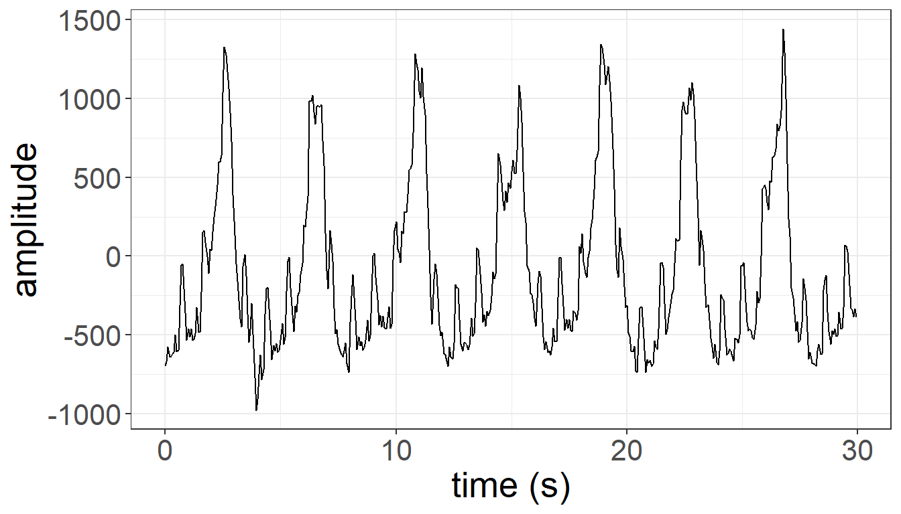
x_fft <- fft(c(v$x,rep(0,1024-nrow(v))))
v_f <- data.frame(
f <- 1:512/512*8,
l <- 20*log10(abs(x_fft[1:512]))
)
ggplot(v_f,aes(f,l))+geom_line()+
scale_x_continuous(name='frequency (Hz)')+
scale_y_continuous(name='Spectrum level')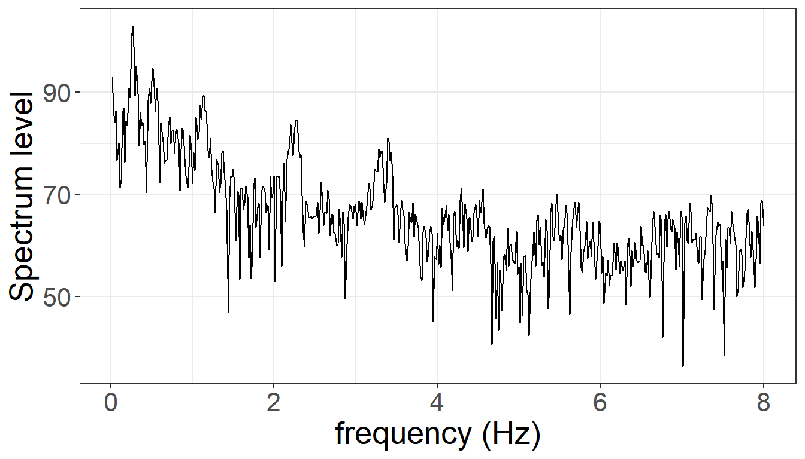
v_up <- data.frame(
t = seq(0,30-1/16/4,1/16/4),
x = as.vector(rbind(matrix(v$x,nrow=1),0,0,0))
)
ggplot(v_up,aes(t,x))+geom_line()+
scale_x_continuous(name='time (s)')+
scale_y_continuous(name='amplitude')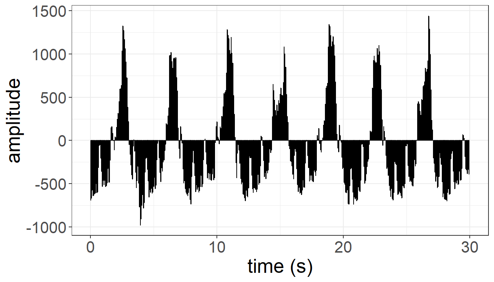
x_up_fft <- fft(c(v_up$x,rep(0,4096-nrow(v_up))))
v_up_f <- data.frame(
f <- 1:2048/2048*8*4,
l <- 20*log10(abs(x_up_fft[1:2048]))
)
ggplot(v_up_f,aes(f,l))+geom_line()+
scale_x_continuous(name='frequency (Hz)')+
scale_y_continuous(name='Spectrum level')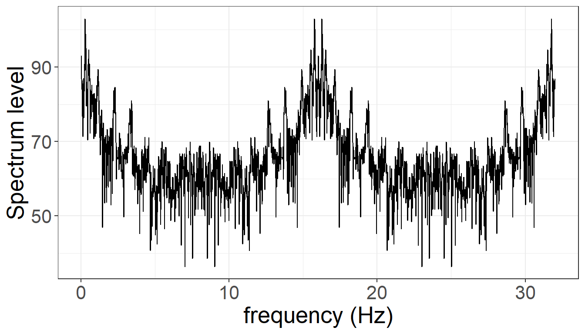
filt_fir <- signal::fir1(n=200,w=c(1.6,7.5)/16/4*2,type='pass')
signal::freqz(filt_fir)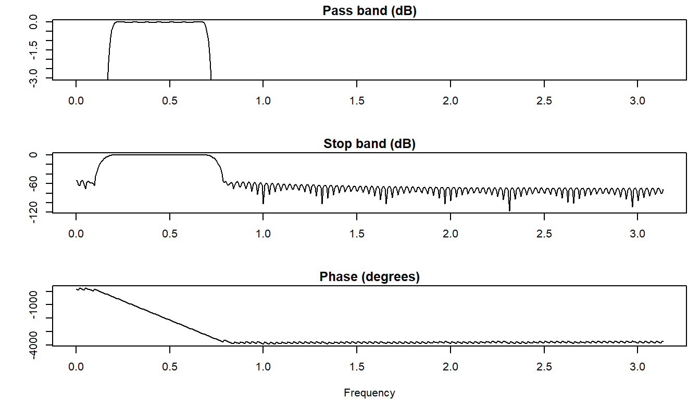
v_up_filt <- v_up %>%
dplyr::mutate(x_filt = signal::filter(filt_fir,x))
ggplot(v_up_filt,aes(t,x_filt))+geom_line()+
scale_x_continuous(name='time (s)')+
scale_y_continuous(name='amplitude')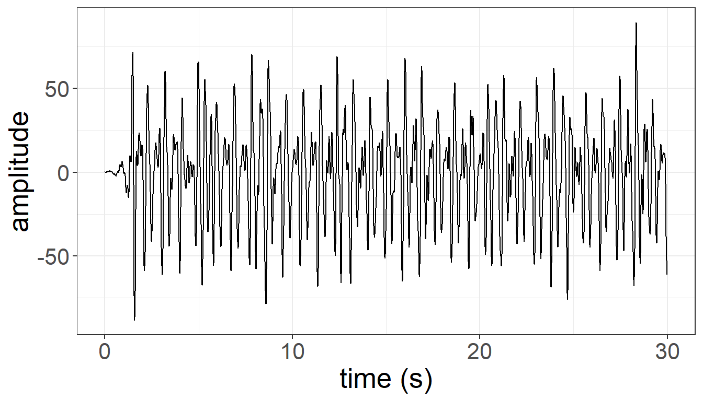
x_up_filt_fft <- fft(c(v_up_filt$x_filt,rep(0,4096-nrow(v_up_filt))))
v_up_filt_f <- data.frame(
f <- 1:2048/2048*8*4,
l <- 20*log10(abs(x_up_filt_fft[1:2048]))
)
ggplot(v_up_filt_f,aes(f,l))+geom_line()+
scale_x_continuous(name='frequency (Hz)')+
scale_y_continuous(name='Spectrum level')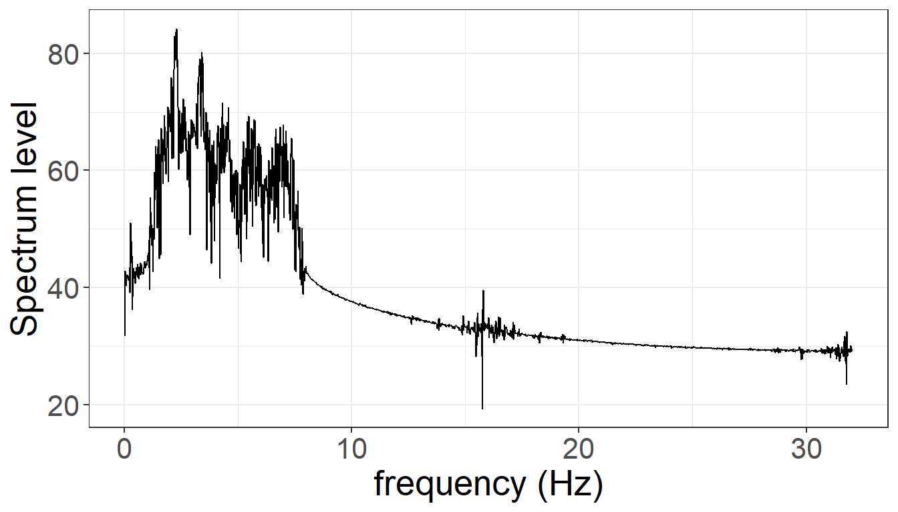
acf <- as.vector(acf(v_up_filt$x_filt,lag.max = nrow(v_up_filt),plot=F)$acf)
v_filt_acf <- v_up_filt %>%
dplyr::mutate(acf=acf)
v_filt_acf_pks <- as.data.frame(
pracma::findpeaks(v_filt_acf$acf, minpeakdistance = 32)
) %>%
dplyr::mutate(
x=v_filt_acf$t[V2],
y=v_filt_acf$acf[V2]
)
knitr::kable(dplyr::filter(v_filt_acf_pks, x < 5))| V1 | V2 | V3 | V4 | x | y |
|---|---|---|---|---|---|
| 0.671 | 59 | 47 | 70 | 0.906 | 0.671 |
| 0.498 | 116 | 104 | 128 | 1.797 | 0.498 |
| 0.401 | 173 | 161 | 186 | 2.688 | 0.401 |
| 0.273 | 229 | 217 | 243 | 3.562 | 0.273 |
| 0.188 | 285 | 274 | 302 | 4.438 | 0.188 |
ggplot(v_filt_acf,aes(t,acf))+geom_line()+
geom_point(data=v_filt_acf_pks,aes(x,y),colour='red',shape=1,size=4)+
scale_x_continuous(name='time (s)',limits=c(0,5))+
scale_y_continuous(name='ACF')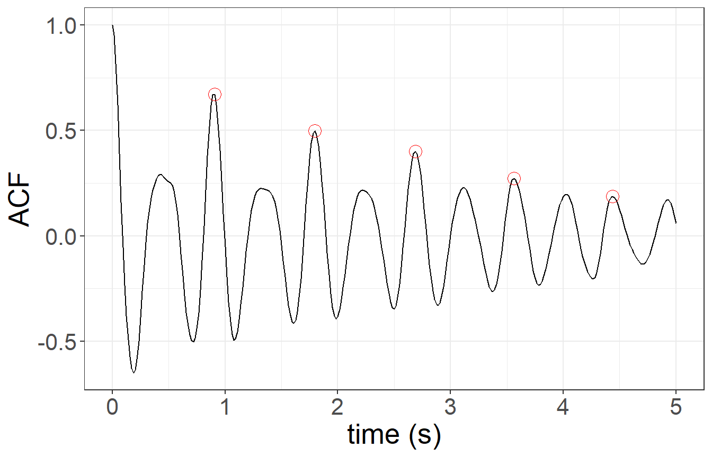
sessionInfo()## R version 3.6.2 (2019-12-12)
## Platform: x86_64-w64-mingw32/x64 (64-bit)
## Running under: Windows 10 x64 (build 17763)
##
## Matrix products: default
##
## locale:
## [1] LC_COLLATE=Japanese_Japan.932 LC_CTYPE=Japanese_Japan.932
## [3] LC_MONETARY=Japanese_Japan.932 LC_NUMERIC=C
## [5] LC_TIME=Japanese_Japan.932
##
## attached base packages:
## [1] grid stats graphics grDevices utils datasets methods
## [8] base
##
## other attached packages:
## [1] clinfun_1.0.15 car_3.0-3 carData_3.0-2 sf_0.8-1
## [5] raster_2.8-19 sp_1.3-1 vcd_1.4-4 ggmosaic_0.2.1
## [9] gridExtra_2.3 htmltools_0.3.6 revealjs_0.9 DiagrammeR_1.0.1
## [13] GGally_1.4.0 DT_0.6 leaflet_2.0.2 forcats_0.4.0
## [17] stringr_1.4.0 dplyr_0.8.4 purrr_0.3.3 readr_1.3.1
## [21] tidyr_1.0.2 tibble_2.1.3 ggplot2_3.2.1 tidyverse_1.3.0
##
## loaded via a namespace (and not attached):
## [1] colorspace_1.4-1 class_7.3-15 rio_0.5.16
## [4] fs_1.3.0 rstudioapi_0.10 mvtnorm_1.0-10
## [7] lubridate_1.7.4 xml2_1.2.2 codetools_0.2-16
## [10] knitr_1.23 jsonlite_1.6 broom_0.5.2
## [13] dbplyr_1.4.2 shiny_1.3.2 compiler_3.6.2
## [16] httr_1.4.1 backports_1.1.4 assertthat_0.2.1
## [19] lazyeval_0.2.2 cli_1.1.0 later_0.8.0
## [22] visNetwork_2.0.7 tools_3.6.2 igraph_1.2.4.1
## [25] gtable_0.3.0 glue_1.3.1 reshape2_1.4.3
## [28] Rcpp_1.0.1 cellranger_1.1.0 rgexf_0.15.3
## [31] vctrs_0.2.2 nlme_3.1-142 crosstalk_1.0.0
## [34] lmtest_0.9-37 xfun_0.7 openxlsx_4.1.0.1
## [37] rvest_0.3.5 mime_0.7 lifecycle_0.2.0
## [40] XML_3.98-1.20 MASS_7.3-51.4 zoo_1.8-6
## [43] scales_1.0.0 hms_0.5.3 promises_1.0.1
## [46] RColorBrewer_1.1-2 yaml_2.2.0 curl_3.3
## [49] downloader_0.4 reshape_0.8.8 stringi_1.4.3
## [52] highr_0.8 Rook_1.1-1 e1071_1.7-1
## [55] zip_2.0.2 rlang_0.4.4 pkgconfig_2.0.2
## [58] pracma_2.2.5 evaluate_0.14 lattice_0.20-38
## [61] labeling_0.3 htmlwidgets_1.3 tidyselect_0.2.5
## [64] plyr_1.8.4 magrittr_1.5 R6_2.4.0
## [67] generics_0.0.2 DBI_1.0.0 pillar_1.4.3
## [70] haven_2.2.0 foreign_0.8-72 withr_2.1.2
## [73] units_0.6-3 abind_1.4-5 modelr_0.1.5
## [76] crayon_1.3.4 KernSmooth_2.23-16 plotly_4.9.0
## [79] rmarkdown_1.12 viridis_0.5.1 readxl_1.3.1
## [82] data.table_1.12.2 influenceR_0.1.0 reprex_0.3.0
## [85] digest_0.6.18 classInt_0.4-2 xtable_1.8-4
## [88] httpuv_1.5.1 brew_1.0-6 signal_0.7-6
## [91] munsell_0.5.0 viridisLite_0.3.0